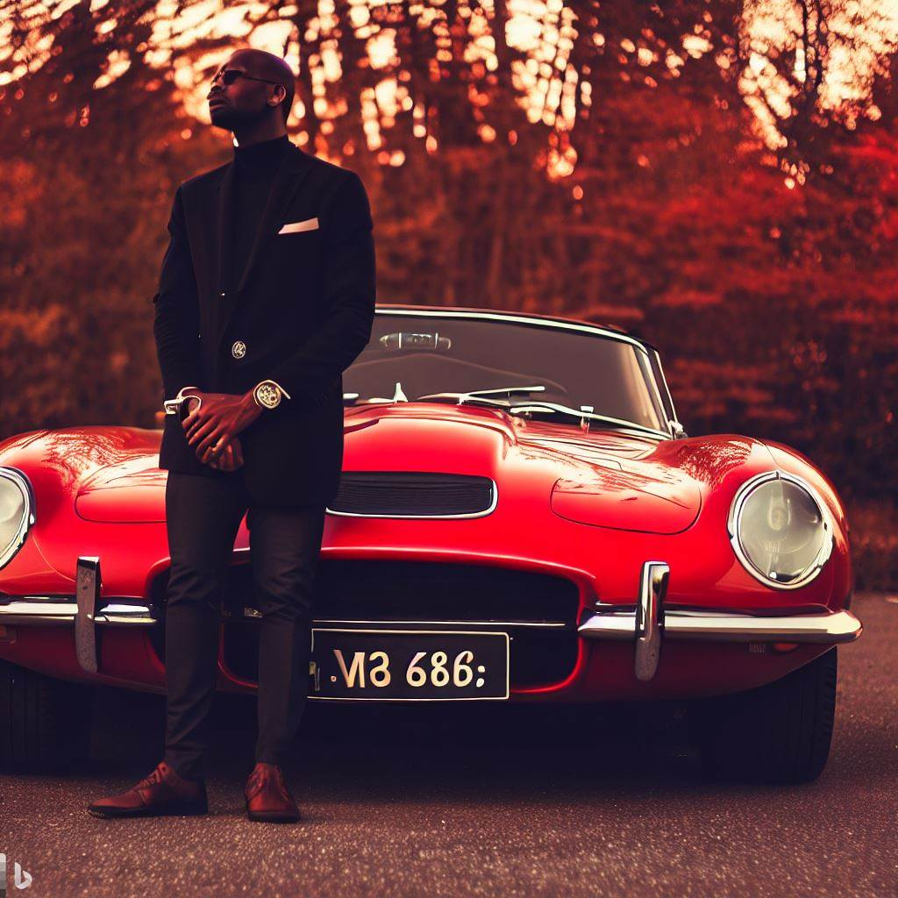

Em 2005, em Londrina, Brasil, Marcos realizou seu sonho de abrir uma loja de carros antigos, chamada "Wheels Nation". Influenciado pelas histórias de carros clássicos contadas por seu avô, ele queria criar um espaço para entusiastas compartilharem sua
paixão. Marcos escolheu modelos raros e restaurou muitos pessoalmente para manter a autenticidade. Apesar do ceticismo inicial, ele organizou eventos locais e exposições para promover a loja. Com dedicação, atraiu amantes de carros antigos
da região, estabelecendo a Wheels Nation como um ponto de encontro e aprendizado. A loja cresceu em reputação, atraindo visitantes de cidades vizinhas e promovendo leilões sazonais. Marcos não só vendeu carros, mas construiu uma comunidade
apaixonada. Sua jornada inspiradora mostrou que perseguir um sonho com paixão pode transformar vidas e comunidades.
